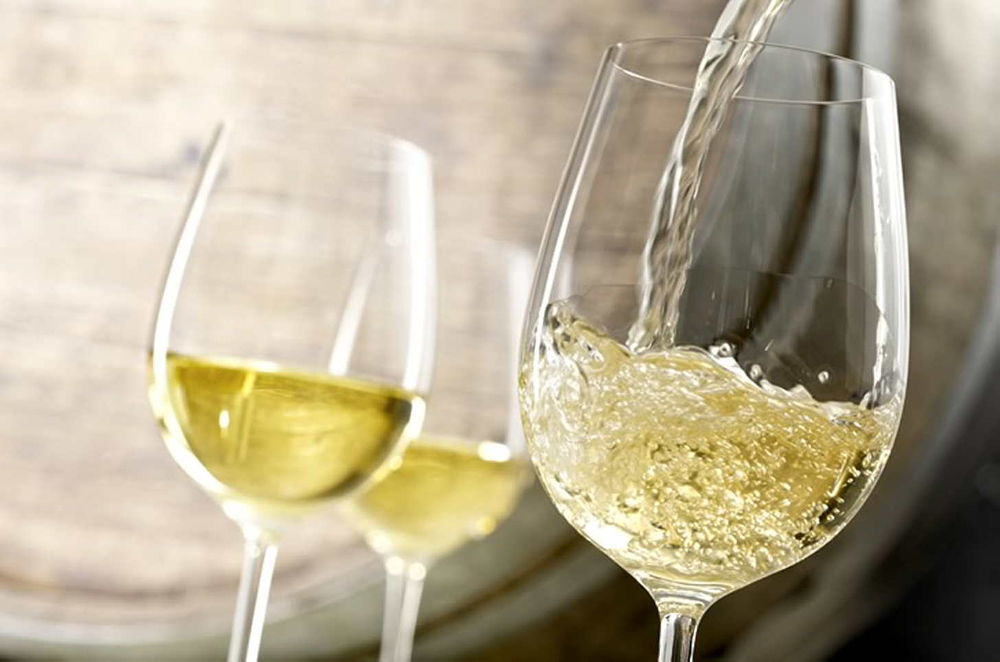

Нетрадиционные способы применения белого вина .

Белое вино — поистине чудодейственный напиток. Недаром его так высоко ценили во все времена. Издавна оно занимало одно из почетных мест на любом праздничном столе, без него не обходилось ни одно торжество. Застолье с ним — не только приятно, но и принесет пользу здоровью. Именно благодаря его благотворным воздействиям на пищеварительную систему и общий тонус организма во многих странах пьют это вино в небольших количествах ежедневно.
Белое вино обладает бесценными качествами — оно проявляет себя и как хороший лекарь, и дает возможность прекрасной половине человечества сохранить и подчеркнуть свою красоту, входя в состав всевозможных косметических средств. Многие знают его как один из важнейших компонентов самых оригинальных яств, многочисленных соусов или сногсшибательных коктейлей и прочих напитков.
Какова же будет степень вашего удивления, когда вы узнаете, что на этом благотворные функции белого вина далеко не исчерпаны!
Многовековой опыт и мудрость человеческая определили множество полезных свойств и качеств этого волшебного напитка. Люди научились применять его довольно-таки нетрадиционными способами, о которых вы и узнаете, прочитав эту главу.
Большинство советов и маленьких хитростей, связанных с использованием белого вина «не по назначению», помогут вам справиться с мелкими неприятностями и проблемами, неизбежно встречающимися на нелегком и каверзном жизненном пути.
МЕБЕЛЬ, НЕ ПОДВЛАСТНАЯ ВРЕМЕНИ
Как известно, со временем мебель теряет свой изначальный сияющий вид. Белое вино в виде винного уксуса поможет вернуть ей, если она изготовлена из дерева (любого, за исключением красного), вид только что приобретенной.
Налейте в небольшую сухую бутылочку полчашки оливкового масла, добавьте туда такое же количество винного уксуса. Плотно закройте бутыль пробкой и хорошо взболтайте содержимое.
Приготовленной таким образом смесью смочите мягкую тряпочку и обработайте ею поверхность мебели. После этого протрите ее насухо другой мягкой тканью, чтобы на поверхности не оставалось полос и пятен. После такой обработки ваша старая или просто запыленная мебель приобретет блеск и сияние, радующие взор.
Если протирать поверхность мебели смесью винного уксуса и оливкового масла регулярно, это поможет сохранить ее отличный внешний вид на долгие годы.
ВОЗРОЖДЕНИЕ ГОРЧИЦЫ
Горчица, хранящаяся в открытой баночке, со временем подсыхает, даже при условии, если она стоит в холодильнике. Если вы открыли горчицу достаточно давно и благополучно забыли о ней, а сейчас обнаружили ее фактически полную непригодность, не расстраивайтесь.
Исправить положение и вернуть горчице ее основные качества и былую влажность поможет белое вино. Всего лишь добавьте в баночку с нею несколько капель белого вина и щепотку сахара. Закройте крышку и через несколько часов вы забудете о том, что горчица была в непригодном состоянии.
СВЕЖЕСТЬ НА КУХНЕ
Современный человек очень занят, ему катастрофически не хватает свободного времени. Вспомните, как часто приходится совмещать несколько дел сразу. Например, вы поставили разогревать обед, а сами в это время отвлеклись на важный разговор по телефону. Результат очевиден: положив трубку, вы идете на кухню и уже при входе подозреваете что-то неладное. Так и есть — обед подгорел и на всю квартиру распространяется жуткий, неприятный запах.
Если первую беду — окончательно потерянный обед — уже никак не исправить, то быстрое и эффективное удаление неприятного запаха подгоревшей пищи вполне возможно при наличии в доме винного уксуса. Налейте немного винного уксуса в железную мисочку и поставьте на медленный огонь. Постепенно выкипая, пары уксуса выместят все остальные запахи.
А если вам приходится отваривать что-либо, издающее специфический запах, портящий аппетит (например, субпродукты или некоторые дары моря), избежать его поможет полотенце, смоченное в винном уксусе и плотно прикрывающее крышку кастрюли.
УДАЛЕНИЕ ПЯТЕН ОТ КРАСНОГО ВИНА
Случается и такое — в разгар торжества какой-либо незадачливый гость опрокидывает на белоснежную скатерть или, что гораздо хуже, на ваш новый наряд бокал с красным вином. Как известно, если такое вызывающе-алое пятно высохнет, всяческие попытки его вывести оказываются бесплодными.
Поэтому, запасаясь красным вином накануне праздника, позаботьтесь и о покупке белого. Спасение вашей скатерти или платья придет словно ниоткуда: не теряя ни минуты, залейте красное пятно обильным количеством белого вина, и с этого момента можете быть спокойны и уверены, что праздник не окажется последним для вашего любимого наряда.
УДАЛЕНИЕ ПЫЛИ И ЗАГРЯЗНЕНИЙ
Практически в каждом доме найдется несколько особенных вещей и предметов мебели, к которым хозяева относятся с теплотой и любовью. Одним очень дорог компьютер, другие ревностно хранят от неловких рук гостей коллекцию фарфоровых статуэток, третьи бережно прикрывают крышку пианино или кабинетного рояля, предохраняя клавиатуру от пыли.
Излишне говорить о том, что каждая такая вещь требует особенно аккуратного обращения и ухода. Каждый раз, протирая от пыли полированную поверхность инструмента или пластиковый корпус компьютера моющим раствором, вы рискуете испортить внешний вид любимой вещи. В этом случае для обработки от различного рода загрязнений подойдут белое вино или винный уксус.
Выберите две небольших тряпочки из мягкой ткани, одну из них смочите белым вином или винным уксусом, а другую оставьте сухой. Обработайте полированную поверхность влажной тряпкой, а затем сразу же вытрите ее насухо.
Протирая клавиатуру инструмента или компьютера, будьте особенно аккуратны. Чтобы удалить пыль, скопившуюся между клавишами, намотайте тряпочку, смоченную белым вином или винным уксусом, на лезвие ножа и осторожно обработайте доступные места.
Статуэтки из хрупкого фарфора обрабатываются следующим образом: сначала влажной тряпочкой, смоченной вином, а затем сухой, до блеска. Такой способ удаления пыли и загрязнений не причинит вещам никакого вреда, поскольку является наиболее мягким даже по сравнению со спиртовым раствором и моющими средствами.
БЛЕСТЯЩИЙ МЕХ
Если вы столкнулись с тем, что светлый мех на вашей шубке заметно потускнел, не огорчайтесь. Вернуть ему прежний блеск поможет винный уксус. Предварительно обработав мех, смочите щеточку в винном уксусе и тщательно почистите шубку. Благодаря такой обработке вы сможете отложить покупку новой шубы на неопределенный срок.